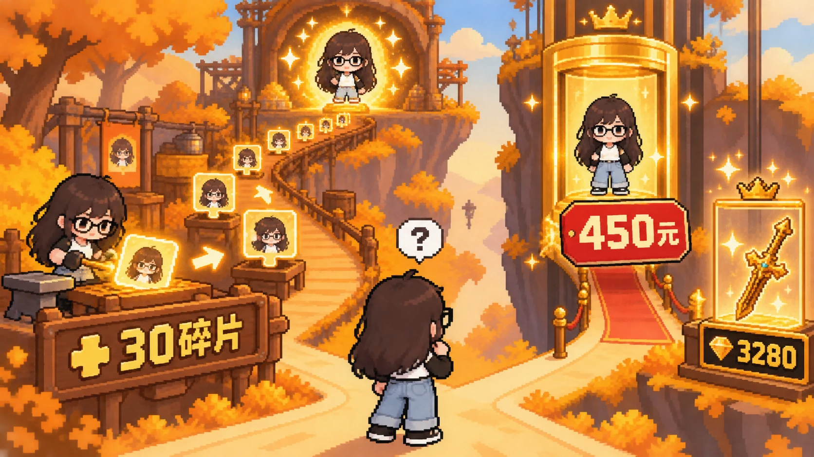
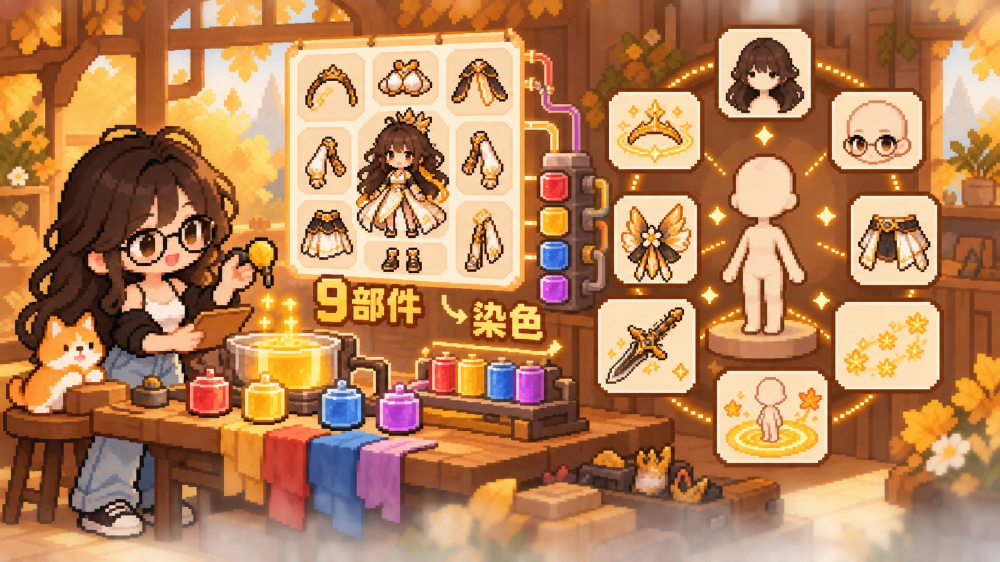
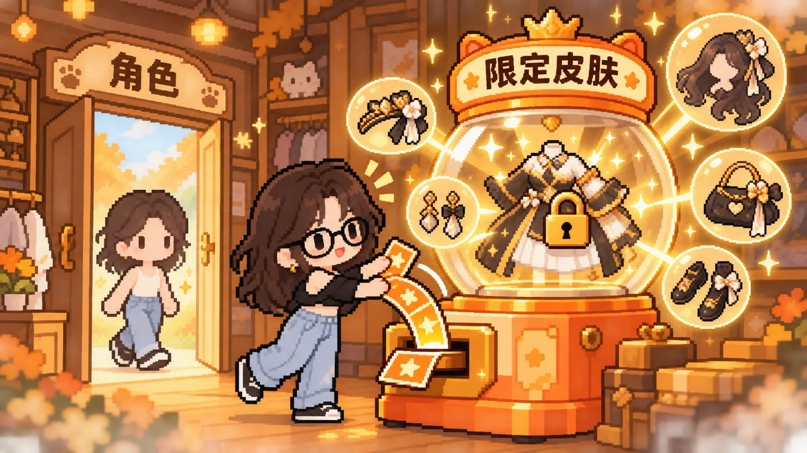
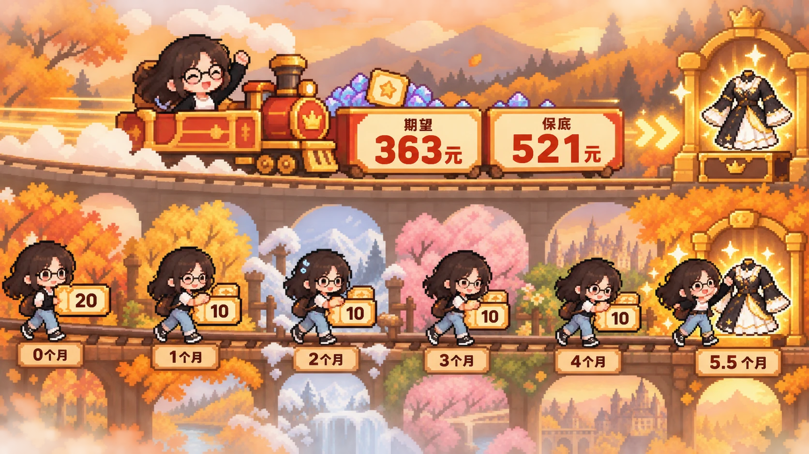
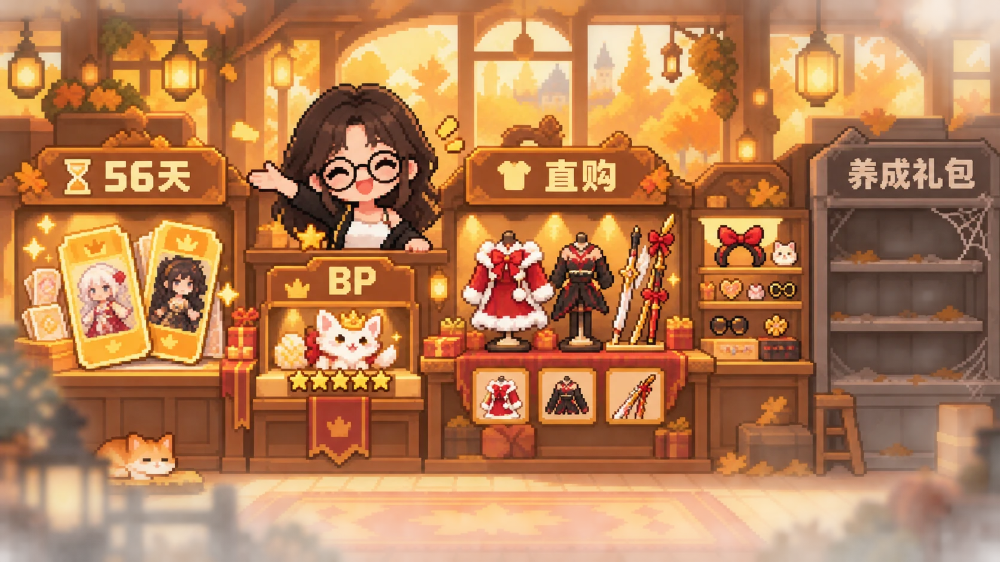

COMPETITOR RESEARCH
“角色基础，皮肤卡池就不基础”——《二重螺旋》商业化整理
角色通过碎片与周本长期可得，付费核心则从战力转向外观、染色和限时皮肤池。
CORE FINDING
二重螺旋弱化传统角色抽卡，将角色与武器放入碎片获取和付费直购两条路径，再把商业化重心迁移到皮肤、附件、染色、动作与特效。它降低了基础战力的随机获取感，却把高额保底和限时资源集中到外观卡池，形成“角色更基础、皮肤更重度”的鲜明结构。
01
MARKET SIGNAL
榜单开局有限，商业化需要从“抽角色”之外寻找承接
产品于10月28日上线，首日iOS畅销榜第129，次日达到阶段峰值第120；截至11月4日回落至约第180。开局没有形成头部二游常见的高位爆发，也意味着仅依赖传统角色卡池，很难支撑预期中的付费规模。
二重螺旋选择将角色和武器放入更稳定的碎片获取体系，同时开放高价直购；付费核心则转向外观资源。它不是取消商业化，而是把付费意愿从“能否拥有角色”重新导向“如何展示角色”。
获取端
角色与武器存在可积累碎片，降低完全依赖随机抽取的不确定性。
付费端
直购价格与限定皮肤池保底仍然较高，消费压力从战力迁移到外观。

02
CHARACTER ACCESS
30碎片合成角色，免费时间换取与付费立即获得并行
公测共有18名角色：1名主角、1名当期角色、8名常驻角色和8名周本角色。通关主线和活动初始可获得包括主角在内的8名角色；后续每30个碎片可以合成角色，最高培养至6次突破。武器也采用相似的碎片获取逻辑。
付费直购则把时间成本转化为确定价格：单个角色碎片需要150付费货币，30碎片合计约450元；武器可以用3280付费货币直接购买。该结构让免费玩家看得到目标，也让急于成型的玩家有确定出口，但直购定价必须依靠角色吸引力和外观生态共同支撑。

03
MODULAR COSMETICS
从整套皮肤扩展到附件、染色、动作与特效
角色与武器皮肤负责替换完整外观，附件则拆为头部、面部、腰部和背部四个槽位，每个槽位最多装备一个。部分皮肤和附件可以染色；限定池皮肤甚至拆成9个可单独染色的区域，进一步放大搭配与表达空间。
普通染料可以用免费货币获取，高级染料来自礼包或兑换。除此之外，装扮资源还包括阵亡特效、回程动画、足迹、光晕和展示动作。付费对象不再只是“一套衣服”，而是一套持续叠加的角色展示系统。
组合价值
多槽位附件与分区染色让同一皮肤产生更多差异化组合，提高复用空间。
展示价值
回程、足迹、光晕和动作把付费表达延伸到战斗外的社交与展示场景。

04
LIMITED OUTFIT GACHA
免费抽取周期很长，付费礼包承担即时保底
开服赠送20次限定抽取，后续角色更新预计每期提供10次。若这类投放稳定延续，玩家仅靠免费资源获得第一件限定皮肤，最晚可能需要到第6个版本，约5.5个月。免费路径存在，但周期足够长，难以满足当期外观消费冲动。
限定抽卡礼包内的道具有56天有效期，可跨上下两个卡池使用。公测首28天，若只追求限定池中的角色形象大奖，仅购买礼包的保底花费约521元，期望花费约363元。“可积累”降低浪费感，“限时”和“高保底”则继续维持强付费压力。

05
COMMERCIAL MAP
常驻外观、限定池与节日售卖共同搭建商业化地图
商店没有集中投放角色成长礼包，BP的核心差异资源是五星魔灵／宠物。圣诞版本则补充角色皮肤、武器皮肤和附件的付费直购；主角圣诞皮肤与光剑武器皮肤通过6元小礼包承担低门槛入口。
圣诞皮肤按男女体型适配大小，但服饰设计基本一致，仍按角色分别售卖；活动期间前两次购买有折扣，BP还提供一个自选礼箱。该方案通过复用设计降低制作成本，同时以角色拆售维持SKU深度，但也容易让玩家感到同款重复付费。
整体结构可以概括为：角色与武器提供“可玩”，常驻外观提供“可搭”，限定池提供“稀缺”，节日直购提供“节点消费”。

结论
二重螺旋通过碎片体系削弱角色随机获取，把长期收入押在外观深度上。这套结构能吸引重视角色表达和搭配的玩家，但需要持续提供足够高质量、可展示、可组合的外观内容，并谨慎处理限定池高保底与节日同款拆售带来的价值感问题。
角色免费化没有消除付费压力，而是把付费从战力随机性迁移到外观稀缺性。
排名、角色数量、直购价格与礼包期望均整理自原始商业化文档，并非官方经营口径；“查看原文”同步保留榜单曲线、商品表、资源列表与礼包成本表。